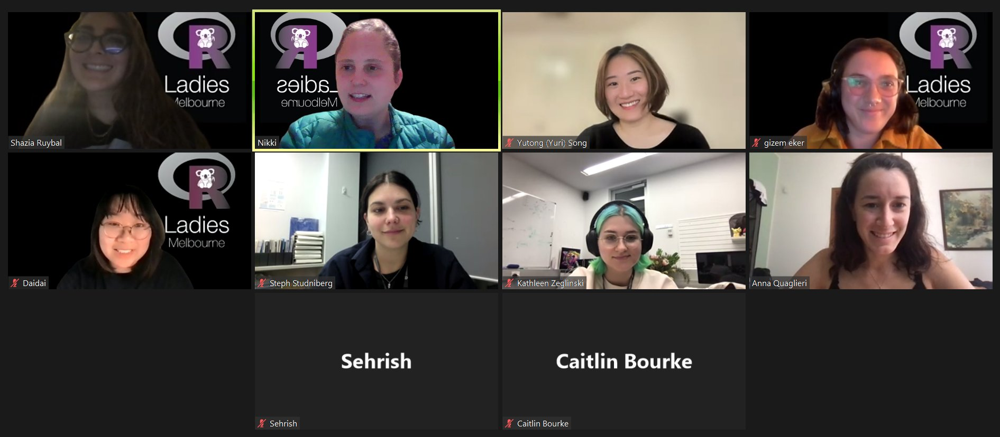
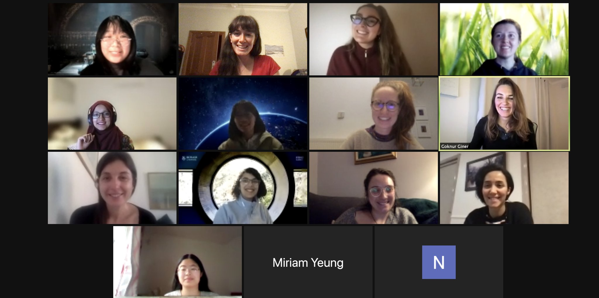
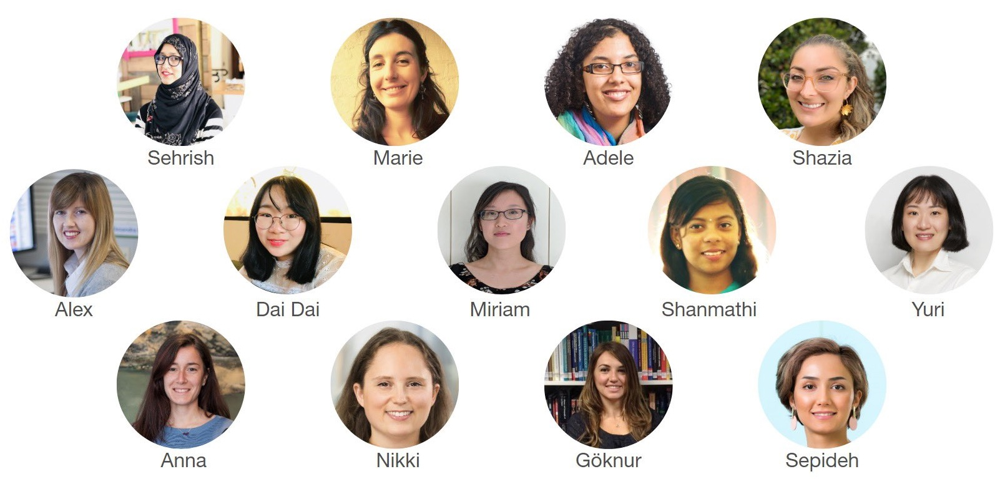
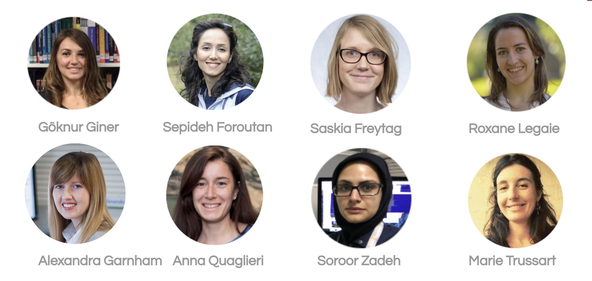
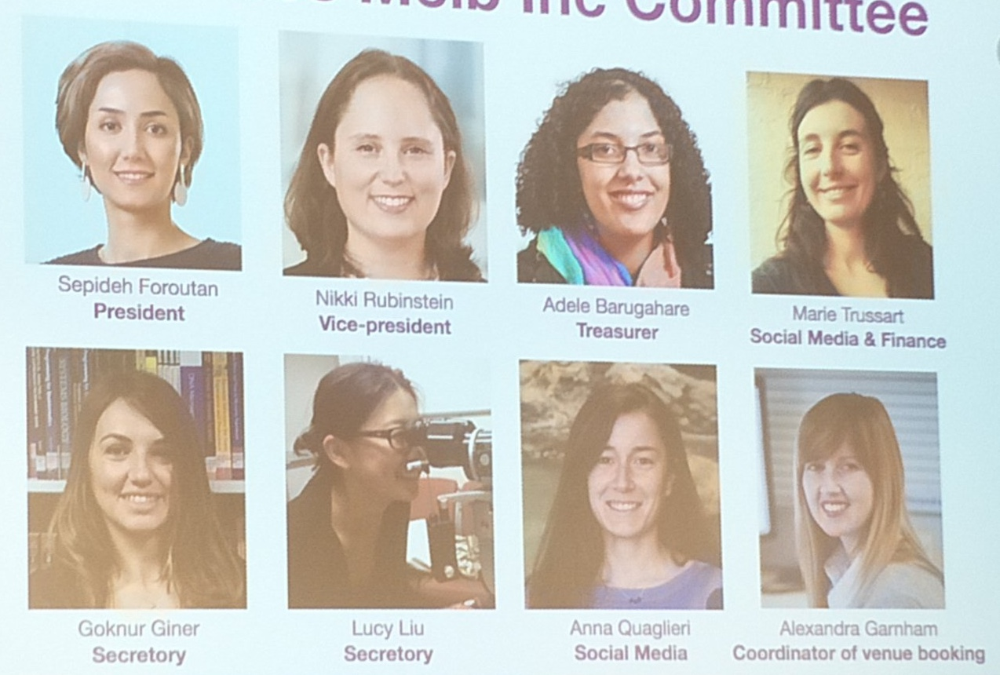
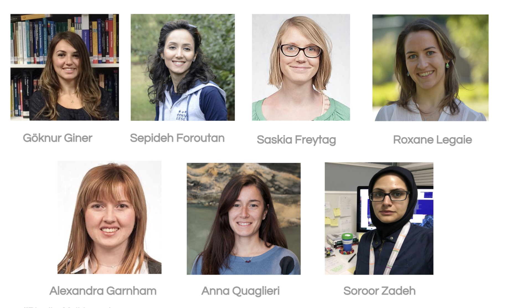

%%{init: { 'logLevel': 'debug', 'theme': 'default', 'themeVariables': {
'fontFamily': 'Helvetica, Arial, sans-serif',
'cScale0': '#88398A', 'cScale1': '#e1b9e2',
'cScaleLabel0': '#ffffff', 'cScaleLabel1': '#000000'
} } }%%
timeline
title History of R-Ladies Melbourne
section Our Foundation
2012 : R-Ladies founded in San Francisco by Gabriela de Queiroz 💜
2016 : 18th October - R-Ladies Melbourne Launched 🚀
section Our Meetups
2017 : R Notebooks and Interactive Graphs
: Git and GitHub Workshop
: Twitter Workshop
: Web Scraping and Sports Analytics
: Build Neural Network with R
: mixOmics Combine Large Scale Datasets
: Introduction to R Workshop
: Random Forest, Climate Change and Food Production
: One Year of R-Ladies Melbourne
: Introduction to R-Shiny
: Christmas Party
2018 : Semiparametric and non-parametric models in R
: From zero to science hero in 1 week
: How R you? R-Ladies Melbourne second anniversary
: R as a tool for complex systems modelling
: Getting down and up with blogging with R!
: Follow me! Introduction so social media analysis in R
: Introduction to R
: Everything you need to know to create your R Package
: More than words - Text Analysis in R
: Parallel Programming in R
: Public Transport Maps and Geospatial Data in R
2019 : Producing publication-ready documents in R Markdown
: Baby one more time - reproducibility in R and when to bring in the big guns
: NLP with SpaCy in R
: Cluster analysis with international education data
: Introduction to R Workshop
: Gold star reproducibility - straightforward containerisation
: Take a sad plot and make it better
: Intro to Data Analysis and Graphics with R
: R-Shiny Tricks or Treats, Maybe Both?
: Designing Data Science
: Christmas Networking Party
2020 : TidyTuesday
: Binovisualfields Package - Development and Publication to CRAN
: Recent work in cluster trials and the representation of women in statistics
: Would you like to become a more confident and engaging speaker?
: R Markdown - A better way of communicating with data
: Sport, Data, and R
: Resume Guru
: How R you? 4-year Anniversary
2021 : TidyTuesday
: Diversity Scholars Workshop
: Create and publish your pesronal website with Blogdown
: A remove glimpse into the useR!2021 conference
: Anomalies! You can't escape them
: The Art of Design - Software and Experimental Design
2022 : Automate your CV with R Markdown - Easy as 1, 2, knit
: AI Ethics Workshop
: How to do analysis for others without going crazy - My mistakes in consulting
: Building a new geom in ggplot2
: Data viz for mass audiences
: The workflow of tidy data, constructing plots and making data driven decisions
: Switching between space and time - Spatiotemporal analysis with cubble
: How I use workflowr to create reproducible analyses
: Choose your own adventure - Tools for Open and Reproducible Research
2023 : Navigating Public Health Careers Insights into Career Journeys
: What's New in the Tidyverse?
: Teaching Computers to See Scatterplots with Scagnostics
: It Takes a Spark 2023 - Become A Disease Detective
2024 : Careers in Data Science
: Increasing diversity in R-Ladies São Paulo
: It Takes a Spark 2024 - Become A Disease Detective
: Data in Sport Analytics
2025 : Upcoming Events TBD!
Our Legacy
Timeline
Our Organising Committees
2024-25
Commitee Members:
- Dionne Argyropoulos (President)
- Danyang Dai (Daidai) (Vice President)
- Sehrish Kanwal (Secretary)
- Kathleen Zeglinski (Treasurer)
- Caitlin Bourke
- Lauren Smith
- Belen Prado
- Cecilia Rios Teran
- Felicia Bongiovanni
- Outgoing Members: Steph Studniberg, Jayani Lakshika
2023-24
Commitee Members:
- Danyang Dai (Daidai) (President)
- Dionne Argyropoulos (Vice President)
- Sehrish Kanwal (Secretary)
- Kathleen Zeglinski (Treasurer)
- Caitlin Bourke
- Belen Prado
- Cecilia Rios Teran
- Steph Studniberg
- Jayani Lakshika
- Outgoing Members: Nikki Rubinstein, Gizem (Evie) Eker, Anna Quaglieri, Yuri Song
2022-23

Meetups Hosted:
- Building a new geom in ggplot2.
- Data viz for mass audiences.
- The workflow of tidy data, constructing plots and making data driven decisions.
- Switching between space and time - Spatiotemporal analysis with cubble.
- How I use workflowr to create reproducible analyses.
- Choose your own adventure - Tools for Open and Reproducible Research.
- Navigating Public Health Careers Insights into Career Journeys.
Commitee Members:
- Gizem (Evie) Eker (President)
- Danyang Dai (Daidai) (Vice President)
- Sehrish Kanwal (Secretary)
- Nikki Rubinstein (Treasurer)
- Yuri Song
- Anna Quaglieri
- Caitlin Bourke
- Kathleen Zeglinski
- Steph Studniberg
- Outgoing Members: Shazia Ruybal-Pesántez, Alexandra Garnham, Sepideh Foroutan
2021-22
Meetups Hosted:
- Create and publish your pesronal website with Blogdown.
- A remove glimpse into the useR!2021 conference.
- Anomalies! You can’t escape them.
- The Art of Design - Software and Experimental Design.
- Automate your CV with R Markdown - Easy as 1, 2, knit.
- AI Ethics Workshop.
- How to do analysis for others without going crazy - My mistakes in consulting.
Commitee Members:
- Shazia Ruybal-Pesántez (President)
- Yuri Song (Vice President)
- Sehrish Kanwal (Secretary)
- Nikki Rubinstein (Treasurer)
- Danyang Dai (Daidai)
- Anna Quaglieri
- Alexandra Garnham
- Sepideh Foroutan
- Caitlin Bourke
- Gizem (Evie) Eker
- Outgoing Members: Marie Trussart, Adele Barugahare, Miriam Yeung, Shanmathi Ramasubbu, Göknur Giner
2020-21

Meetups Hosted:
- Recent work in cluster trials and the representation of women in statistics.
- Would you like to become a more confident and engaging speaker?.
- R Markdown - A better way of communicating with data.
- Sport, Data, and R.
- Resume Guru.
- How R you? 4-year Anniversary.
- TidyTuesday.
- rstudio::global(2021) %>% filter(workshops==“diversity scholars”) %>% summarise().
Commitee Members:
- Sehrish Kanwal (President)
- Marie Trussart (Vice President)
- Shazia Ruybal-Pesántez (Secretary)
- Adele Barugahare (Treasurer)
- Alexandra Garnham
- Danyang Dai (Daidai)
- Miriam Yeung
- Shanmathi Ramasubbu
- Yuri Song
- Anna Quaglieri
- Nikki Rubinstein
- Göknur Giner
- Sepideh Foroutan
- Stephanie Koo
- Ming Kong
2019-20

Meetups Hosted:
- Baby one more time - reproducibility in R and when to bring in the big guns.
- NLP with SpaCy in R.
- Cluster analysis with international education data.
- Introduction to R Workshop.
- Gold star reproducibility - straightforward containerisation.
- Take a sad plot and make it better.
- Intro to Data Analysis and Graphics with R.
- R-Shiny Tricks or Treats, Maybe Both?.
- Designing Data Science.
- Christmas Networking Party.
- TidyTuesday.
- Binovisualfields Package - Development and Publication to CRAN.
Commitee Members:
- Sepideh Foroutan (President)
- Nikki Rubinstein (Vice President)
- Marie Trussart (Vice President)
- Göknur Giner (Secretary)
- Lucy Liu (Secretary)
- Adele Barugahare (Treasurer)
- Shazia Ruybal-Pesántez
- Saskia Freytag
- Alexandra Garnham
- Anna Quaglieri
- Miriam Yeung
- Shanmathi Ramasubbu
- Outgoing Members: Roxane Legaie, Sooror Zadeh
2018-19

Meetups Hosted:
- Introduction to R
- Follow me! Introduction to social media analysis in R
- Getting down and up with blogging with R!
- R as a tool for complex systems modelling
- How R you? R-Ladies Melbourne second anniversary
- From zero to science hero in 1 week
- Semiparametric and non parametric models in R
- Producing publication-ready documents in R Markdown.
Commitee Members:
- Göknur Giner
- Sepideh Foroutan
- Saskia Freytag
- Roxane Legaie
- Alexandra Garnham
- Anna Quaglieri
- Sooror Zadeh
- Marie Trussart
- Nikki Rubinstein
- Adele Barugahare
- Lucy Liu
2017-18

Meetups Hosted:
- Twitter Workshop
- Web Scraping and Sports Analytics
- Build Neural Network with R
- mixOmics Combine Large Scale Datasets
- Introduction to R Workshop
- Random Forest, Climate Change and Food Production
- One Year of R-Ladies Melbourne
- Introduction to R-Shiny
- Christmas Party
- Public Transport Maps and Geospatial Data in R
- Parallel Programming in R
- More than words - Text analysis in R
- Everything you need to know to create your R package!
Commitee Members:
- Sepideh Foroutan (President)
- Nikki Rubinstein (Vice President)
- Göknur Giner
- Saskia Freytag
- Roxane Legaie
- Alexandra Garnham
- Anna Quaglieri
- Sooror Zadeh
- Marie Trussart
2016-17

Meetups Hosted:
Commitee Members:
- Göknur Giner
- Sepideh Foroutan
- Saskia Freytag
- Roxane Legaie
- Alexandra Garnham
- Anna Quaglieri
- Sooror Zadeh